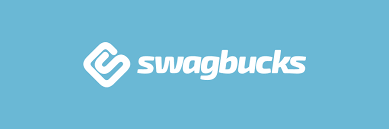
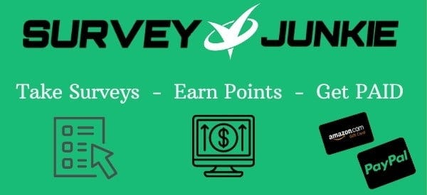

Making money online is a great way to earn extra income and there are many great
websites that allow the user to do this.
Although there are a lot of great websites that allow users to make money online,
there are only a few of them are actually worth your time.
The Best Websites to Make Money Online for 2024
by: Josue Caballero Sanchez | March, 3, 2024
1. Freecash

Freecash is a website where you can earn money by
playing games, completing tasks, signing up for new services, and taking surveys.
They also have a daily and monthly leaderboard where you can earn up to $500 or $50
on the daily and monthly leaderboard respectively. Not to mention they also
have one of the most rewarding referral programs where you can boost your earnings
by inviting friends and family members to join. If you sign up using the button
you will even get a free case worth up to $250, and if you earn $1
within 48 hours of signing up you will get three more cases.
Highlights:
• Multiple ways to make money
• Many different ways to cashout
• Great reviews on trustpilot
Approximate monthly earnings:
$100 - $500
2. Intellizoom
Intellizoom is a survey and product testing website that pays you for
completing studies and sharing your opinions. Unlike other survey websites,
IntelliZoom will pay a lot more for completing studies. Studies take around
5 - 20 minutes and the pay ranges from $1 - $10. If you are comfortable being on
camera you can also take studies that requre a webcam for higher paying studies.
The only downside to IntelliZoom
is that you have to wait to receive studies and the only payout option is through
Paypal, but the positives greatly outweigh the negatives.
Highlights:
• High payout rates
• No minimum to cashout
• Studies are easy to complete
Approximate monthly earnings:
$20 - $100
3. Swagbucks

Swagbucks is very similar to Freecash as you can make money by completing various tasks like taking
surveys, playing games, and signing up for new products. Swagbucks also has a referral program where
you can earn money by inviting family and friends. Swagbucks has many different ways to cash out
including PayPal and many different gift cards. Swagbucks is one of the oldest and most trusted
sites and excels at having some of the best surveys for users. Swagbucks is one of the best ways
to make extra money online and is an all around great website.
Highlights:
• Great reviews
• Multiple ways to make money
• Multiple ways to cashout
Approximate monthly earnings:
$50 - $200
4. Usertesting

Usertesting is one of the best product testing websites with some great user reviews. Testers get paid
for sharing their honest feedback on what they think about other compaies digital products such as websites.
Tests usually require a webcam and microphone so if you are comfortable being recorded and talking to your device
then this is a great website for You. Usertesting also has some great payout rates as you can earn as much as $60
per test. Usertesting does have some downsides like having limited tests, having to take screeners before
each test to see if you qualify, and only being able to cashout via PayPal, but despite these downsides Usertesting is still well worth your time.
Highlights:
• High payout rates
• No minimum to cashout
• Great user reviews
Approximate monthly earnings:
$20 - $80
5. Surveyjunkie

Survey Junkie is one of the oldest and most trusted survey sites with some of the best user reviews.
Survey Junkie shines not only because it allows users to take surveys but it also allows users to
earn by product testing, participating in focus groups, and taking phone surveys.
You can earn even more money by enabling their extension SJ Pulse which gives users more personalized surverys.
Surveyjunkie also has many different ways to cashout including bank transfers, Paypal, and a Visa gift card. On
top of all this Surveyjunkie also has a refferal program which allows users to make more money by inviting
friends and family.
Highlights:
• Easy to take surveys
• Trusted website
• Multiple ways to cashout
Approximate monthly earnings:
$20 - $100
These are some of the best websites that can help you make more money online, each of these websites are useful and unique in their own way so hopefully you were able to find something that suits your needs.
Disclaimer: Some of the links included in this article are affiliate links, which means if you click on an affiliate link and sign-up then I'll receive a small commission. It would be greatly appreaciated if you considered using the link to sign-up as it will help me out tremendously, and it is also completely free of charge to you. Not to mention that you usually get a sign-up bonus for using my link too!